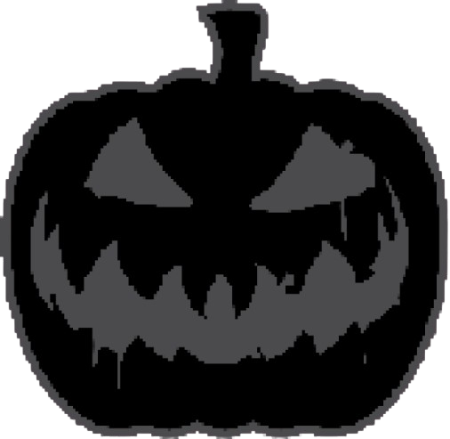
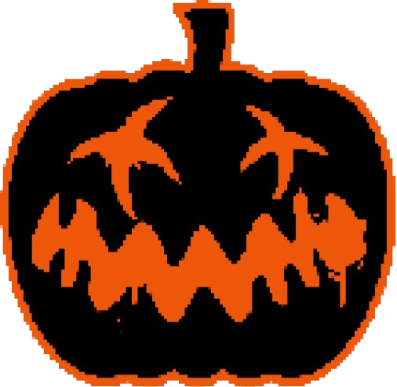
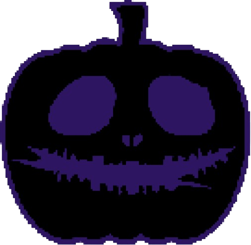

Preto:
No Halloween, a cor preta tem um significado profundo e simbólico, associada principalmente à morte, mistério e escuridão.
Historicamente, o Halloween está enraizado em celebrações como o Samhain,um festival celta que marcava o fim da colheita e o início do inverno, um período de escuridão crescente.
O preto, por sua vez, representava o luto e a noite, momentos em que os espíritos dos mortos deveriam vagar pela Terra.
Laranja:
A cor laranja no Halloween está fortemente associada à energia vibrante do outono e à colheita, principalmente de abóboras,
que são um símbolo central dessa celebração. No Halloween, essa cor é uma contraparte ao preto, trazendo equilíbrio de morte e escuridão com uma sensação de calor,
proteção e celebração. O laranja também está relacionado às lanternas de abóbora esculpidas (jack-o'-lanterns), que são usadas para afastar espíritos malignos.
Roxo:
A cor roxa no Halloween tem um significado sobrenatural, estando ligada à magia, ao ocultismo e ao mistério.
Historicamente, o roxo é associado à realeza e ao poder, mas no contexto do Halloween, essa cor simboliza a espiritualidade, a transição entre o mundo físico e o espiritual,
e os segredos do desconhecido. No folclore e em tradições esotéricas, o roxo também está associado à bruxaria, feitiçaria e elementos místicos.
Charles ••• Guilherme ••• Gustavo ••• João Pedro ••• João Fernando ••• Yasmin